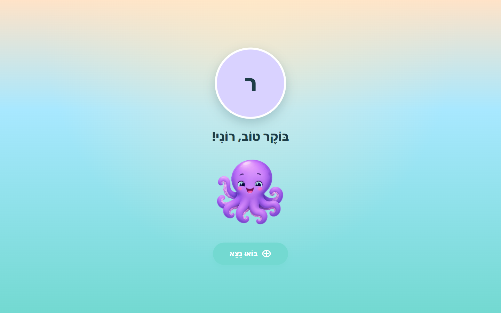
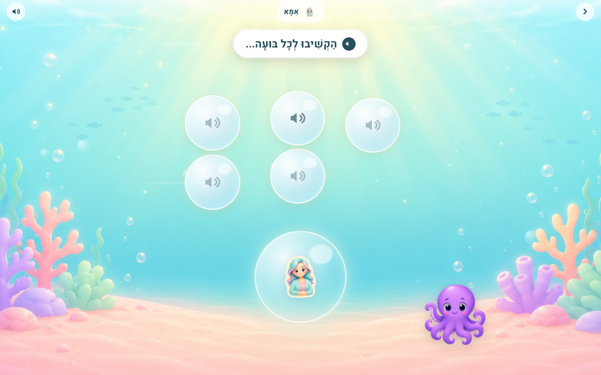
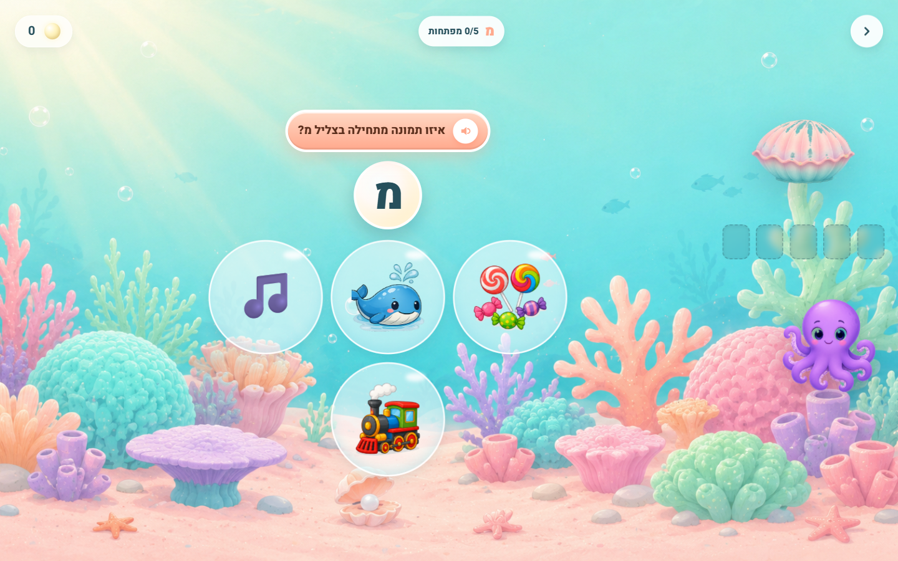
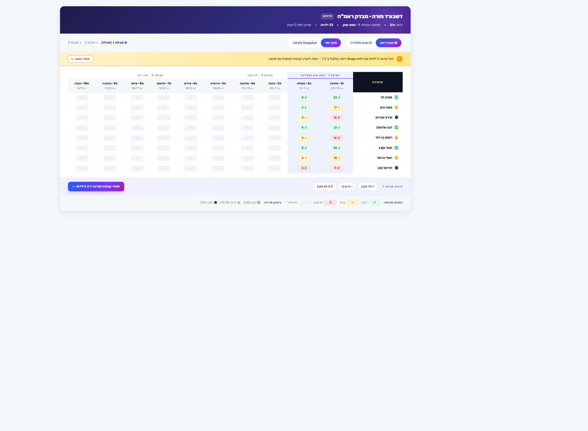
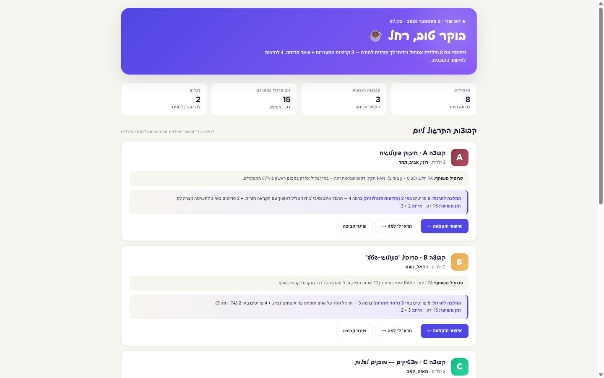

אבני יסוד — מערכת דיפרנציאלית שהופכת את הכיתה הרגילה לכיתה שמכילה כל תלמיד — בכל רמה, בכל קצב.
בתשפ"ט קובעת תוכנית החומש להכלה הירושלמית: אין כיתות מקדמות בכיתות א'-ג'. אבני יסוד מעניקה למחנכת את הכלי שמאפשר ללוות כל תלמיד במסלול אישי לרכישת הקריאה — בתוך הכיתה הרגילה, ללא תיוג, וללא הוצאה למסגרת נפרדת.
הוצג ל
מנח״י · עמותת אינקלו
במסגרת
תוכנית החומש להכלה
מאי
2026
Impact OS
אבני יסוד · פיילוט להכלה
0220
הכיתה אחרי תשפ"ט
28 ילדים. אין יותר כיתה מקדמת. איך מורה אחת מלמדת קריאה לכל אחד?
הילד שהיה הולך לכיתה מקדמת — לומד עכשיו בכיתה הרגילה. ילד שמכיר 22 אותיות לצד ילד שמכיר 5. המורה לא יכולה להכין 25 דפי עבודה שונים בכל לילה. היא צריכה כלי שיודע מה כל ילד צריך — ונותן לו את זה ב-15 דקות של תרגול ביום.
8
ילדים בקצב יסוד
מכירים פחות מ-12 אותיות. צריכים הרבה חזרה, קצב איטי, פירוק לצעדים קטנים.
14
ילדים בקצב הרגיל
מתחילים לבנות הברות. צריכים תרגול שטף ומילים שכיחות.
6
ילדים בקצב מואץ
קוראים מילים מנוקדות. צריכים אתגרים והבנת משפט.
המסר
המורה מלמדת. אבני יסוד מתרגלת. יחד — והמורה מקבלת זמן לעבוד 1:1 עם מי שצריך אותה הכי.
Impact OS
אבני יסוד · פיילוט להכלה
0320
בסיס פדגוגי מאומת
לא המצאנו את הגלגל. על מה המערכת נשענת.
ישבנו על המסמכים הרשמיים, על מחקר רכישת הקריאה בעברית, ועל המערכות שעובדות בעולם. המורה עובדת לפי תוכנית הלימודים — אבני יסוד מתרגלת לפי אותה תוכנית בדיוק.
בסיס · 1
תוכנית משרד החינוך תשפ"ו
מודל פרופ' מיכל שני (מרכז אדמונד ספרא, אונ' חיפה). שלושה רכיבים מעגליים שנלמדים במקביל.
בסיס · 2
מבדקי ראמ"ה
הכלי הרשמי שמודד היכן כל ילד עומד. 3 פעימות בשנה, 10 משימות.
בסיס · 3
Science of Reading
הסטנדרט הבינלאומי (NRP 2000) + מחקר עברי של בר־און, רביד ושייר.
הקו המנחה
לא חידוש לשם החידוש. יישום של מה שכבר עובד — בידיים של המורה.
Impact OS
אבני יסוד · פיילוט להכלה
0420
יום ראשון בכיתה — חוויית הילד
בשש דקות — המערכת מכירה את כל ילד.
ילד שנכנס לאבני יסוד לראשונה לא מקבל מבחן. הוא יוצא למסע בים עם נוני התמנון. חמישה שלבים, בערך 6 דקות — והמערכת מקבלת תמונה ראשונית: מה הילד יודע, מה הוא צריך, איפה להתחיל.
בועות צליל — מודעות פונולוגית בסיסית (איזה צליל פותח את המילה).
אלמוגי אותיות — זיהוי של 3 אותיות שכיחות.
תיבת מילים — אוצר מילים מוכר.
סיפור הרעב — הבנת הנשמע.
בועת מילה — קריאה ראשונית, אם הילד יודע.
העיקרון
זה לא מבחן. זאת דלת רגשית. הילד נכנס דרך משחק — ואבני יסוד מתחילה ללוות אותו.
avnei-yesod / onboarding

Impact OS
אבני יסוד · פיילוט להכלה
0520
חוויית הלמידה
ילד לא יודע שזה תרגול. הוא משחק.
כל פעילות באבני יסוד היא משחקון עם סיפור — לא דף עבודה דיגיטלי. הילד שומע צליל ומחפש בועה. שומע אות ופותח צדף קסום. גם החזק וגם המתקשה משחקים את אותו משחק.
אי 1 · מודעות פונולוגית
הבועה שרוצה לעלות

הילד מקשיב לכל בועה ובוחר את הצליל הנכון. מנגנון: זיהוי צליל פותח.
אי 3 · זיהוי אותיות
הצדף הקסום

הילד שומע צליל אות ובוחר את התמונה שמתחילה בו. מנגנון: צליל ↔ מילה.
המסר למורה
ב-15 דקות של תרגול יומי, המערכת אוספת כ-50 נקודות נתון על כל ילד. כל תגובה — נכון, לא נכון, מהיר, איטי — מזינה את המנוע שיודע מה התרגיל הבא הנכון.
Impact OS
אבני יסוד · פיילוט להכלה
0620
המנוע — במילים פשוטות
לכל ילד, לכל מיומנות — אחוז של "שולט".
כל פעם שילד מתרגל, המערכת מעדכנת לעצמה: "כמה הילד הזה שולט באות מ'? בחיריק? בבניית הברה?". האחוז עולה כשהוא מצליח, יורד כשהוא נכשל. ככה היא יודעת בכל רגע מה התרגיל הבא הנכון לו.
×1
לא ניחוש בודד
ילד שניחש נכון פעם אחת לא קופץ ל"שולט". המערכת מחכה לדיוק עקבי לפני שמעלה את האחוז — מונעת מסקנות שגויות.
↻
לא יום עייף
ילד שטעה היום אחרי שלושה ימי דיוק — לא מאבד את ההתקדמות. המערכת מבדילה בין דעיכה אמיתית לבין יום קשה אחד.
◉
שקוף למורה
כל החלטה ניתנת להסבר. המורה רואה אחוז ומבינה למה התרגיל נבחר. אין "קסם של אלגוריתם" שאי אפשר להסביר.
בשורה אחת
זה לא קסם. זה מודל מתמטי פשוט שעוקב אחרי כל ילד בכל מיומנות, בכל יום. המורה לא צריכה להבין אותו — אבל היא יכולה לראות בדיוק מה הוא אומר.
Impact OS
אבני יסוד · פיילוט להכלה
0720
הפרופיל האורייני המתפתח
יום 1: תמונה ראשונית. יום 3-5: פרופיל מלא — אחד מתוך 4.
האונבורדינג של 6 דקות נותן רמזים ראשונים. אבל הפרופיל האמיתי של הילד מתגבש רק אחרי 3-5 ימי משחק — כשהמערכת אספה כ-200 אינטראקציות ויודעת באמת איפה הוא עומד. אז המערכת משייכת אותו לאחת מ-4 קבוצות — וההתאמה האישית מתחדדת.
1פרופיל א
שליטה מצוינת
מסלול: אי 3 + אי 2
כל האותיות + רמת פונמה + כתיב פונטי מלא.
דילוג על אי 1 ישר לתרגולים מתקדמים.
2פרופיל ב
שליטה טובה
מסלול: אי 3 + אי 2
רוב האותיות + רמת צירוף/פונמה.
קצב רגיל — בלי דילוגים, בלי האטה.
3פרופיל ג
שליטה חלקית
מסלול: אי 1 → 2 → 3
חלק מהאותיות + רמת הברה/צירוף.
חיזוק יסוד לפני המעבר לאי הבא.
4פרופיל ד
פערים משמעותיים
מסלול: אי 1 אינטנסיבי
פערים ברכיבי יסוד פונולוגיים.
התראה למורה + תמיכה מוגברת אוטומטית.
פרטיות וכבוד
הילד לא רואה את הפרופיל. גם לא קבוצת השוואה. רק המערכת והמורה רואות — והמורה היא תמיד הסמכות. היא יכולה לאשר, לדרוס, או לעדכן. מבוסס על: ד"ר לימור קולן, מפמ"ר עברית · משה"ח 2025 · פרופיל אורייני
Impact OS
אבני יסוד · פיילוט להכלה
0820
האינטגרציה — לב המערכת
אותו פאק חודשי — 4 חוויות שונות בכיתה.
הפאק קובע את הנושא של החודש. הרמה האישית קובעת איך כל ילד יחווה אותו. זאת הדיפרנציאליות בפועל — אותה מטרה, ארבעה מסלולים, אותו רגע.
דוגמה · פאק ינואר = חיריק
1רמה 1 — עצמאי
רוני
חיריק + אתגר
תרגול חיריק עם משפטים מורכבים. אתגר נוסף.
מהירות תגובה גבוהה, דיוק עקבי — מוכנה לקפיצה.
2רמה 2 — חלקית
דניאל
חיריק + רמז זמין
תרגול חיריק עם רמז זמין בלחיצה אם צריך.
ברוב הזמן לא צריך — אבל זה שם כשהוא צריך.
3רמה 3 — התאמות
מאיה
חיריק + פירוק + רמזים
תרגול חיריק עם פירוק לצעדים + רמזים אוטומטיים.
המערכת מובילה אותה צעד-צעד, בלי לחץ.
4רמה 4 — תמיכה מוגברת
תמר
חיריק + 50% תוכן קודם
תרגול חיריק עם 50% תוכן מהחודש הקודם כתמיכה.
חוזרת לבסיס תוך כדי שהיא מתקדמת.
המהפכה השקטה
ארבע ילדות. אותה כיתה. אותו רגע. אותה מטרה. ארבעה מסלולים שונים — ואף אחת מהן לא יודעת באיזו רמה היא. כולן משחקות את אותו משחק.
Impact OS
אבני יסוד · פיילוט להכלה
0920
המורה לא צריכה להיות בכל מקום
כשילד מהסס — המערכת לא מחכה לטעות. היא מגיבה תוך שניות.
מורה לא יכולה להיות ליד 28 ילדים בכל שנייה. המערכת רואה את ההיסוס בזמן אמת — ומציעה עזרה ברגע הנכון, בלי שהמורה תצטרך להתערב באמצע השיעור.
1
טעות ראשונה
רעידה עדינה. "נסה שוב." הילד מתמודד בעצמו — בלי תיוג, בלי "תפסיק".
2
טעות שנייה
רמז ויזואלי + הצליל מושמע. הילד מקבל יותר מידע — אבל עדיין מנסה לבד.
3
טעות שלישית
"הקש פה" — הצבעה ישירה לתשובה הנכונה. הילד מצליח, לא נשבר.
למה זה חשוב
ילד לא חייב להגיע ל"אני לא יודע" כדי לקבל עזרה. הוא מקבל אותה ברגע ההיסוס — וממשיך הלאה. בלי תסכול, בלי סטיגמה, בלי להפסיק את השיעור.
Impact OS
אבני יסוד · פיילוט להכלה
1020
07:30 בבוקר · גרסה 1 — מבט ראמ"ה
דשבורד מבדק ראמ"ה — סקירה של כל הכיתה ב-5 שניות.
טבלה אחת. 23 תלמידות × 10 משימות ראמ"ה × 3 פעימות. פעימה 1 פעילה — רחל סורקת בעין את עמודת אותיות + מודעות פונולוגית, רואה מי תקין (✓), מי קרוב (~), מי מתחת לרף (✗), ומי עוד לא נמדדה (○).
avnei-yesod / teacher-rama-dashboard (F.21A)

למה זה עובד
המסך מדבר בשפת משרד החינוך + ראמ"ה. לא BKT, לא אלגוריתם — 10 משימות וסטטוס. אותה שפה שרחל מדברת בה עם המפקחת ועם ההורה.
Impact OS
אבני יסוד · פיילוט להכלה
1120
מבט אחר על אותו דשבורד
או — תכנון יום שלם בקבוצות.
גרסה שנייה של הדשבורד: "ניתחתי את 8 הילדים שתרגלו אתמול וזיהיתי 4 קבוצות התערבות + 2 דגלים — מוכנות לאישור." במקום טבלת ראמ"ה — קבוצות פעולה. רחל מאשרת קבוצה-קבוצה, ויודעת בדיוק עם מי לעבוד היום ולמה.
avnei-yesod / teacher-dashboard / יום 2 · ספטמבר

שתי גישות. אותה כיתה.
ראמ"ה — סטטוס פר משימה (לדיווח / מפקחת). קבוצות — תוכנית פעולה ליום (לתכנון השיעור). שתי הגרסאות מבוססות על אותו מנוע — בוחרים לפי השאלה שהמורה שואלת באותו רגע.
Impact OS
אבני יסוד · פיילוט להכלה
1220
הבדל קריטי
מורה רגילה רואה: "8 ילדים טעו". רחל רואה: "8 ילדים בלבלו ב' עם ר'."
מה ההבדל בין "תרגול נוסף" לבין "תרגול נכון"? לדעת על מה הילד טועה. המערכת מנתחת 3 צירים פר טעות — סוג הכשל × ההקשר × סוג המשימה — ומציגה למורה דפוסים שחוזרים.
בידוד · תחילת מילה · אמצע · סוף · פונט שונה · עם רעש רקע.
◇
סוג המשימה
זיהוי (קל) · שיום (בינוני) · מציאה בתוך מילה · כתיבה (קשה).
למה זה משנה
במקום "תרגיל אקראי באות ב'" — תרגיל ספציפי שמטפל בבלבול ב/ר במיקום אמצע מילה.זה ההבדל בין שעה שאיבדה לבין שעה שעזרה.
Impact OS
אבני יסוד · פיילוט להכלה
1320
המערכת מציעה. המורה מחליטה.
"תראי לי למה" — כל המלצה ניתנת להסבר.
רחל לא צריכה לקבל את ההצעות בעיניים עצומות. כל המלצה — קבוצה, רמה, תרגיל — מגובה בכפתור "תראי לי למה" שמסביר את הלוגיקה בשפה אנושית. ואם רחל לא מסכימה, היא יכולה לדרוס.
שקיפות
תראי לי למה
לחיצה על "תראי לי למה" על כל קבוצה / המלצה →
"מאיה הציגה אחוז שליטה נמוך על ר' שלושה ימים רצופים. דפוס שגיאות: בחרה ד' בשליש מהפעמים. ההמלצה: משחקון זיכרון-מיון להבחנה ויזואלית בין ר' ל-ד'."
רחל מקבלת תובנה — לא רק החלטה.
סמכות
רחל יכולה לדרוס
רחל יכולה: לבטל קבוצה, לשנות רמה, לשייך ילד אחר, או להסביר למערכת למה.
"הוא בסדר עם ר' — הקושי שלו ב-PA" · "אני יודעת מבחוץ — לא הייתה אתמול" · "אני רוצה לאתגר אותה, לא להאט"
המערכת לומדת מהדריסה — ומשתפרת בכיתה הזו.
החלוקה הנכונה
אבני יסוד לא מחליטה במקום רחל. היא מציעה לה התחלה. רחל מתחילה משם — לא מ-0.
רוב מחוזות החינוך בארה"ב — ירידה ברכישת קריאה מאז הקורונה. אבל יש מי שהצליח להשתפר דרמטית.
הירידה ברכישת קריאה היא תופעה גלובלית — לא רק ישראל. אבל שני מחוזות בארה"ב הצליחו להשתפר דרמטית מהשפל של הקורונה — בעקרונות שאבני יסוד עושה אוטומטית.
קומפטון · קליפורניה
מחוז עני שהשתפר דרמטית
→מעבר ל-Science of Reading שיטתי
→סקרינר אוניברסלי + ניטור התקדמות
→תגבור בקבוצות קטנות בזמן יום הלימודים
→הכשרת מורות בהוראה מבוססת מחקר
השקיעו מאמץ אדיר ידני — מורות נוספות, סקרינרים, ליווי כיתות.
וושינגטון · D.C.
מחוז עירוני שהשתפר דרמטית
→חקיקת מדינה למעבר ל-Science of Reading
→הכשרת מורות LETRS בשיטות מבוססות מחקר
→מעקב MTSS תלת-שכבתי לתלמידים חלשים
→סקרינר רב-שנתי + דיווח פומבי
תוכנית רחבה ומתמשכת — תקציב מיוחד, שינוי שיטתי של ההוראה.
למה זה משנה
מה שמחוזות שלמים מצליחים בקושי דרך הוספת מורים + שעות תגבור — אבני יסוד עושה אוטומטית, בכיתה רגילה, בלי תקציב מיוחד.
ובעברית — אבני יסוד היא הראשונה שמשלבת אדפטיביות + שקיפות פדגוגית + התאמה פר-יום + שפה למורה. מקור: Stanford Education Recovery Scorecard · NYT 2024-25 · דיווחי מדינה
Impact OS
אבני יסוד · פיילוט להכלה
1520
המהפכה השקטה
מה שלא היה אפשרי 30 שנה — אבני יסוד עושה כשגרה.
דיפרנציאליות הייתה תמיד "תיאוריה" שמורות מנסות לעשות עם 28 ילדים, בלי תקציב. אבני יסוד הופכת אותה לברירת מחדל אוטומטית — שכבת תוכנה שעובדת לצד המורה.
בלי אבני יסוד
המצב הקיים
✗5 דפי עבודה בלילה — או רמה אחת לכל הכיתה.
✗ילד חלש = "קבוצת חיזוק" גלויה לכולם.
✗המורה מנחשת מה כל ילד יודע.
✗כיתה מקדמת = הפתרון לפערים.
✗"תרגול נוסף" אקראי על כל אות בלי הבחנה.
עם אבני יסוד
השינוי בכיתה
✓דשבורד אחד — 4 רמות פעילות בו-זמנית באותו תוכן.
✓ילד חלש משחק את אותו משחק — אין סטיגמה.
✓המערכת יודעת — אחוז אמיתי פר ילד פר מיומנות.
✓הכיתה הרגילה = הפתרון. דיפרנציאליות מובנית.
✓"תרגול נכון" — לפי דפוס הכשל הספציפי של הילד.
שינוי תפיסה
זאת לא שיפור הדרגתי. דיפרנציאליות עוברת מ"רעיון פדגוגי" ל"שכבת תוכנה אוטומטית" — בידיים של כל מורה, בכל כיתה, מהיום הראשון.
Impact OS
אבני יסוד · פיילוט להכלה
1620
התאמה מבנית לתוכנית החומש
אבני יסוד = מענה תוספתי #4 — כוח אדם מומחה בהוראה מותאמת בקריאה.
תוכנית החומש מגדירה 4 מענים שבית-ספר מקבל. מענה #4 מבקש "כוח אדם מומחה בהוראה מותאמת בקריאה וכתיבה" — אבני יסוד מספקת את זה כשכבת תוכנה, בלי להוסיף עוד מורות לתקציב.
4
זרוע #4 — מענים תוספתיים
אבני יסוד מספקת מומחיות קריאה דיגיטלית — חוסכת עלות של מורה נוספת פר כיתה.
5
זרוע #5 — שינוי הלמידה
"פחות 30 תלמידים-מורה-לוח · יותר למידה מותאמת" — אבני יסוד = הכלי שמאפשר את זה.
▲
יעד תשפ"ט
אין כיתות מקדמות בא'-ג'. אבני יסוד עוזרת לכיתה הרגילה להחזיק את הילד שהיה הולך לכיתה מקדמת.
הצעת הערך
הפיילוט הזה לא מציע "עוד כלי" — הוא מציע אבן בניין מרכזית בתוכנית החומש. כלי שעונה במישרין על שאלת רכישת הקריאה — שהיא הסיבה המספר אחת שילדים מופנים לכיתות מקדמות.
תוכנית החומש להכלה ↗
Impact OS
אבני יסוד · פיילוט להכלה
1720
סטטוס פיתוח · מאי 2026
לא עיצוב על נייר — מערכת חיה.
אבני יסוד היא פרויקט פיתוח אקטיבי. רוב הרכיבים החיוניים כבר נבנו ועובדים בפועל — מה שחסר ל-MVP מלא ידרוש פיתוח נוסף בחודשי הפיילוט.
🟢 חי היום
מה כבר עובד
✓9 משחקונים פעילים (4 באי 1 · 5 באי 3)
✓מנוע BKT עם sub-BKT פר אות (22 אותיות)
✓מנגנון EPA — ניתוח דפוסי כשלים
✓אונבורדינג + פרופיל אורייני ראשוני
✓11 פאקס חודשיים מוגדרים (ספט-יוני)
✓vocab-bank מאומת מול ספרי מטח
✓2 גרסאות דשבורד (ראמ"ה + קבוצות)
🟡 בפיתוח לפיילוט
מה נשלים
→13 משחקונים נוספים (איים 2, 4-22)
→F.21A — מסך מורה סופי עם PIN פרטיות
→מנגנון דריסה ולמידה מהמורה
→Apps Script לסנכרון נתונים בענן
→תצוגת הורה (Phase B)
→תמיכה במובייל מלאה (טאבלט)
המסר לפיילוט
המערכת כבר עובדת היום באי 1 + אי 3. הפיילוט יחל בכיתת א' אמיתית עם החומר הקיים — ויתרחב הדרגתית תוך כדי שאר האיים מתווספים.
Impact OS
אבני יסוד · פיילוט להכלה
1820
מודל פיילוט · צוות · אמינות
מי עומד מאחורי המערכת — ואיך נעבוד יחד.
פרטי השותפות פתוחים לדיון. כאן המסגרת הראשונית.
$מודל מסחרי
פיילוט במימון משותף
פתוח לדיון
מודל פיילוט גמיש במימון משותף עם מנח"י + אינקלו. תיקצוב ההקמה + ליווי מצד צוות אבני יסוד.
מבנה תקציבי מותאם להיקף — להחלטה בפגישה הראשונה.
★צוות הליבה
4 שותפים מקצועיים
Impact OS
מיטל פלג
עמית אביטבול
לירון גולן
אופיר שטיינברג
תפקידים מפורטים — לקבוע בפגישה עם השותפים.
✓מה כבר עובד
המערכת חיה ופעילה
לדיון מפורט בפגישה
9 משחקונים פעילים · מנוע BKT מלא · 2 דשבורדים למורה · 11 פאקים חודשיים מוכנים.
תוצאות ראשוניות מבדיקות פנימיות יוצגו בפגישה הראשונה.
ההבטחה שלנו
צוות מקצועי מלא · מערכת חיה · מודל גמיש.לא הצעה אחת קשיחה — שותפות שמתעצבת לפי הצרכים של מנח"י ואינקלו.
Impact OS
אבני יסוד · פיילוט להכלה
1920
מה עכשיו?
3 צעדים כדי להתחיל.
הפיילוט מוכן להפעלה. הצעדים הבאים — קצרים, מסודרים, ואפשר להתחיל אותם השבוע.
1החלטה משותפת
קביעת היקף הפיילוט
פגישה · 60 דק'
פגישה עם מנח"י + אינקלו לקבוע: כמה כיתות, באילו בתי ספר, ומה התקציב.
להתחיל ב-2-3 כיתות א' בבתי ספר שונים — או גדול יותר אם יש עניין.
2בחירת בתי ספר
גיוס בתי ספר ומורות
תהליך · 2-3 שבועות
פנייה מנהלות בתוך מועדון ההכלה · אישור מרצון של המנהלת והמורה · התאמת ציפיות.
אישור מרצון בלבד — לפי עקרון הוולנטריות של תוכנית החומש.
3הכנה והפעלה
התקנה + הכשרת מורות
לפני ספטמבר 2026
התקנה טכנית · הכשרת המורות · תחילת תרגול בכיתה עם ליווי שבועי.
צוות אבני יסוד מלווה את הפיילוט מהיום הראשון.
הזמינות שלנו
אנחנו מוכנים להתחיל מיד אחרי החלטה משותפת. צוות הפיתוח מחזיק במערכת חיה — לא בעיצוב — ויכול לפתוח כיתה ראשונה תוך 4-6 שבועות מהאישור.
Impact OS
טכנולוגיה יוצרת אימפקט
לסיכום · אבני יסוד × תוכנית החומש להכלה
כלי שעובד לצד המורה.
כיתה רגילה — שמכילה.
בעברית, שקופה, מוכנה לפיילוט.
אבני יסוד היא מערכת תרגול חיה — לא חזון על נייר. מוכנה לפיילוט בתשפ"ז במסגרת תוכנית החומש להכלה הירושלמית.
מה שמדינות שלמות מצליחות בקושי — אנחנו עושים אוטומטית, בכיתה הרגילה, בידיים של המורה.